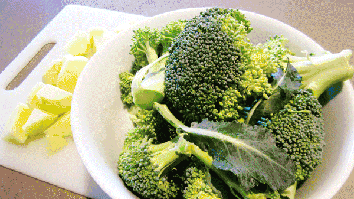
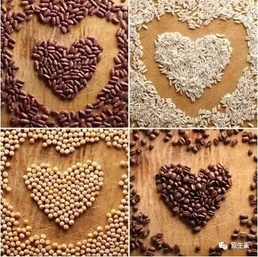
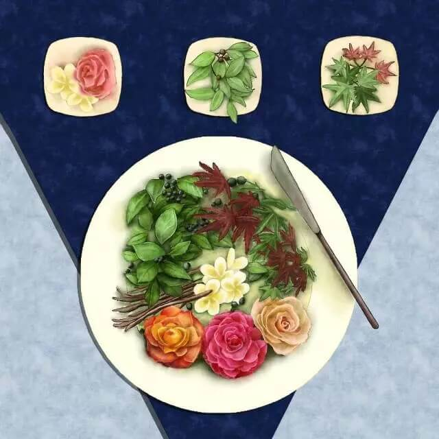

温馨提示：佛学入门系列课程由佛法人生弘法平台（www.xuefo.vip）根据历代祖师大德、当代法师的开示整理而成，为了避免在阅读时产生一些困惑、误解甚至怀疑和诽谤，强烈建议您从第一课开始按顺序学习。最后，愿大家都能成为一个正见的佛教徒，早证菩提。
一、吃斋与吃素
吃斋：指过午不食，跟吃什么没有关系。所以吃斋就是在过了午时之后，一直到第二天的早上天亮之前不吃东西。天亮的定义是以不用照明的前提下，能看见掌纹为准。这期间可以喝水等流体。我们现在的出家人因为各种原因往往做不到，就有开遮允许吃药（把食物当药吃，用以治疗我们的饥疮），所以寺院的晚饭叫药石。
吃素：指不吃荤辛，荤菜包括鸡蛋等一切肉类荤菜，辛菜就是指葱、蒜、韭菜等五种带刺激性的辛菜。
综上所述，严格的修行者应该是吃素斋，即不吃荤辛，同时过午不食。

有一只小狐狸说：我有一件美丽的衣裳，一年四季穿身上。我一辈子只有这么一件衣裳，是妈妈生我的时候送我的，我从此天天穿着它，晚上睡觉也不脱。人呀，我的衣裳只一件，而你的衣橱已满又满。我的衣裳是我的毛皮，失去毛皮，我只有血肉一团。你的衣服可以一天三换，我衣服脱下，就会命丧九泉。
二、为什么不能吃五辛
《楞严经》：阿难！一切众生食甘故生，食毒故死。是诸众生求三摩地，当断世间五种辛菜。是五种辛，熟食发淫，生啖增恚。如是世界食辛之人，纵能宣说十二部经，十方天仙嫌其臭秽，咸皆远离。诸饿鬼等，因彼食次，舐其唇吻。常与鬼住，福德日销，长无利益。阿难！修菩提者，永断五辛，是则名为第一增进修行渐次。
经文解释：阿难，一切众生若是想得到三摩地的话，一定不能吃五种辛菜（葱、蒜、韭菜等刺激性食物，辣椒和姜不属于五辛）。这五种食物，生吃助嗔（脾气越来越大，无明烦恼越来越多），熟吃助淫（男女欲望越来越重）。吃五辛或饮酒食肉之人，纵然他能宣讲三藏十二部经典，十方天仙也觉得他臭不可闻，极其污秽，全部都离得远远的（吃素久的人都有这个感觉，远远就能闻到吃肉和吃五辛的人身上散发的臭气）。吃完五辛的人，饿鬼就来和他接吻，舔他的嘴唇，因为饿鬼喜欢五辛的味道。所以吃五辛的人常常和鬼住在一起，虽然人看不见，但自己的福德却一天天的减少。阿难！修佛法的人，永远都不能吃五辛，这是对修道的第一种增进修行渐次。
吃五辛的人，因为天仙护法、菩萨善神都不保护他，所以大力魔王就得到方便了，就变成佛的身体，来给他说魔的法，赞叹淫欲、赞叹瞋恚、赞叹愚痴。于是乎，这种的人受魔王的迷惑，就没有正知正见，没有真正的智慧，没有正知正见，有什么呢？就有了邪知邪见。魔王说淫欲好，他也信了：这佛告诉我的嘛！佛告诉我说淫欲是没有关系，不要紧的！又说是：烦恼也不要紧的，烦恼即菩提，这是佛告诉我的！本来是魔王给他说的法，他说是佛说的，这就叫认贼作子，认魔作佛了。

三、吃素的好处
1、减轻体重
《美国营养和饮食学会期刊》发表过一项为期5年的追踪调查显示，不吃肉的人，平均身高体重指数要低于食肉者，素食者比杂食者患上肥胖症的比率明显偏低（9.4%对33.3%）。此外，即使摄取的热量相同，吃肉少的人也更苗条。
2、不易的心血管疾病
吃太多肉和乳制品会增加血液中胆固醇的含量，而血液中胆固醇含量过高会增加人们患上心脏病的风险。
3、血压降低
发表在《公共健康营养学期刊》上的一项研究成果显示，素食者的高血压患病率要低于肉食者。这是因为前者的平均体重较轻，且他们会摄入大量的果蔬。
4、患糖尿病风险降低
美国糖尿病协会进行的一项研究显示，少吃肉会降低人们患上代谢综合征的风险，它是与2型糖尿病、中风和心脏病相关的一组风险因素。
5、患癌症风险降低
美国加州洛马林达大学的研究人员曾经对近7万名不吃肉的人进行了长达10年的追踪调查。结果发现，食用素食会降低所有癌症的发病率。
6、改善消化功能
食用更多的蔬菜和豆类意味着对膳食纤维的摄入量增加，这能改善总体的消化功能，减少便秘。
7、皮肤更光泽
多吃素食是对皮肤最有益的饮食方案。多吃新鲜的水果和全粒谷物能增加对抗氧化剂的摄入量，而抗氧化剂可以综合造成皱纹、褐斑和其他导致老化迹象的自由基。
8、预防骨质疏松
素食有助于骨质增加密度，预防骨质疏松症。高蛋白饮食是引起骨质疏松症的原因所在。
9、心情更愉快
英国华威大学和美国达特茅斯学院的经济学家和公共卫生研究人员通过对英国8万人的饮食习惯进行调查后发现，每天吃7份果蔬的人感觉最快乐，而普通人每天食用不足3份。
10、身体能量水平会增加
多吃菠菜、羽衣甘蓝和豆类等富含膳食硝酸盐的食物会让你感觉精力更充沛。硝酸盐对血管健康有益处，它能扩张血管、降低血压，甚至能提高运动能力。
四、如何正确吃素
「欲靠食物滋养，食素人宜多吃麦。食麦之力大于米力不止数倍。光吃了面食，则精神健壮，气力充足，音声高大。米则只可饱腹，无此效力。麦比参力尚高数倍。有钱人服参，乃是钱无处用，故作此消耗耳。非真能补人也。又大磨麻油，亦补人。小磨麻油，以炒焦枯了，力道退半。人但知香，实则是焦味耳。莲子，桂圆，红枣，芡实，薏米，皆可滋补。岂必须血肉，方能滋补乎。总之皆不如麦之力大。」
摘自《印光法师文钞卷十七复蔡契诚居士书一》

五、最长寿的素食者
世界最长寿的素食者李清云（1677-1933年），生于康熙十六年(公元1677年），先后经历了康熙、雍正、乾隆、嘉庆、道光、咸丰、同治、光绪、宣统九代至中华民国，在世256岁，是世界上极其罕见的长寿星。
李青云一生取过24个妻子，子孙满堂。在他100岁时（1777年）曾因在中医中药方面的杰出成就，而获政府的特别奖励。在他200岁的时候，仍常去大学讲学。民国十六年（公元1927年）李青云应四川军阀杨森的邀请去万县传授养生之道。杨森对李敬若上宾，为李青云特质全身新衣，请照相馆照相陈列在橱窗里，表明标明开县二百五十岁老人李青云肖像，民国十六年春三月摄于万州。一时间省内各报竞相作为奇闻报道，轰动全川。
他曾接受过许多西方学者的来访。他认为自己健康长寿的原因有三：一是长期素食；二是内心保持平静、开朗；三是常年将枸杞煮水当茶饮。

六、国学大师吃素90年
1914年3月出生的叶曼女士，她原名刘世纶，按中国民间传统纪年方法，她已百岁高龄。叶曼北大毕业，中年后师侍南怀瑾先生、陈健民上师。叶曼是当今世界极少将儒、道、佛文化融会贯通的国学大家之一，多年来曾讲授过各门经典课程，并有多项着作问世，在海内外享有盛誉。
问其长寿之道，叶老开口便说：“我的饮食不简单！我从8岁就开始吃素，已经吃了90年”。据她老人家说，吃素对人体很有益处，并不像有些人说的会营养不良。她说：有些东西我没法告诉大家，只能靠你们自己去悉心体会。
七、世界正在悄悄奖励吃素的人
2007年底，小帕（香港演员Angie.P）身体开始不适，流血不止，由于种种原因直到2009年2月在美国被确诊为子宫内膜癌。四位医生都强烈建议她割除子宫及卵巢。那时候吃纯素的朋友给她推荐素食，介绍《救命饮食》这本书，后来她找到这本书，也看了很多资料，觉得吃素真的对身心有帮助，那就试试看。后来半年内癌症不药而愈，没有做手术、电疗和放疗！于是她开始推广素食帮助更多的人认识饮食健康。这是真实的故事，已经拍成了微电影，请关注佛法人生网微信公众号（xuefo_vip）后点击底部菜单进入佛法学院小程序，前往视频板块，观看《微电影一温暖的素食》。
他曾是世界最年轻重量级拳击冠军，被认为是世界上最好的重量级拳击手之一。那个时候的泰森如野兽一般，情绪不稳定，过着放荡不羁的生活，数次入狱加上夜店嗑药的生活严重影响了他的职业生涯！退役之后他陷入窘境。破产、肥胖、毒瘾、高血压、关节炎等等每一件事都在折磨着他，使他几乎无法呼吸！但老天爷并没有放过他，2012年他4岁的女儿去世，泰森一夜之间成熟了，他决定痛改前非，决心尝试素食！尝试素食3周后，泰森觉得很快乐！他从此不再吃肉，西兰花，米饭，土豆汤这些是他的最爱。他成功击败了毒瘾，让自己成为了一个更好的父亲和丈夫。过去的关节炎，高血压在素食后都消失了！
美国前总统克林顿：素食救了我的命。
克林顿入主白宫时，他的胃口好是出了名的。他喜欢汉堡、牛排、鸡肉卷、烤肉和薯条，而且还不太讲究。在新罕布什尔州的竞选逗留期间，据说他买了一打油炸圈饼，助手劝他不要再吃时，他基本上已经吃得差不多了。美国总统身边肯定是不缺高级医疗的，当医生告诉他对有心脏病家族病史的他来说，需要做出更多的根本的转变之后，克林顿用素食救了自己的命。
当然我所做的没有任何科学依据支持。所以，当时我做了个决定，打算彻底改变。克林顿说他现在不吃肉，不吃奶制品，不吃鸡蛋，而且几乎滴油不沾。
“我所有的血检结果都很好，生命体征也都正常，我感觉良好。不管你信不信，我觉得自己精力更充沛了”。
克林顿这样跟古普塔医生说：“我喜欢现在吃的蔬菜、水果、豆类等东西”。

没错！世界正在悄悄奖励吃素的人，大家快来一起吃素吧，愿每个人身体健康。
八、素食会比肉食缺少营养吗？
素食者的力量和速度不如肉食者吗？素食者的运动成绩不如肉食者吗？20世纪最伟大的田径运动员卡尔刘易斯给了我们最好的答案：我吃素后再无对手！
前奥运金牌数个人榜首的一位奥运会9枚金牌得主，严格素食者卡尔刘易斯（Carl Lewis）十三次打破过百米、二百米短跑和跳远世界纪录连续四次获得奥运会跳远比赛金牌，是唯一一个连续四次参加奥运会并在同一项目上获得金牌的运动员。多次获得过世界最佳运动员的称号。卡尔刘易斯发现，自己不需要动物蛋白质就可以成为一名成功的运动员。
九、吃素让你远离癌症
罗大伦，1968年生，辽宁沈阳人，北京中医药大学中医诊断学博士，健管家，原任北京电视台《养生堂》节目主编，CCTV《百家讲坛》中医专家。
这让大家很奇怪，我为什么会吃素呢？
其实我以前不是这样的，我自己发现，我的人生几年前好像有一个转折点，之前和之后很不相同。我是东北人，东北人喜欢吃肉，这是大家都知道的了，我也不例外，那叫一个爱吃肉，什么红烧肉，锅包肉，怎么吃都不够，每到一个地方或者饭店，必问：你们家红烧肉做的如何？遇到吃得地道的，我一定会把厨师请出来，指点我一下，遇到做的很差的，我会很不客气指点他一下。
但是，等读了博士，事情就转变了，我的很多转变都是在北京中医药大学发生的，那个时候，去食堂，总是遇到同学们吃得很简单，我很奇怪，开始以为是大家生活水平不好，吃不起肉，后来在一起一聊，敢情，这些同学都是素食主义者啊。

我上一届的博士，叫陈松鹤，是位北医毕业的西医高材生，结果却从头学了中医，吃的绝对是素食，还有几位同学，有类似的经历，有的与宗教有关，有的是出于健康的考虑，结果，后来我发现，大家都吃素，我反而成了另类，最后我思考再三，终于也吃素了，这一吃，也觉得不错的。
我们现在总是听说周围的谁和谁得肿瘤了，可能有人认为这是错觉，是信息沟通比以前顺畅了吧？其实不是，这些研究数据告诉我们，现在的发病人数确实已经成倍增长了。
有英国医学专家考察了我们的状况后说，中国的恶性肿瘤发病率还没有完全暴露出来，再过十年，将会是高峰来到了。
癌症的一个主要原因就是吃肉，长期吃肉者体质呈酸性，长期素食者体质呈弱碱性，而大量的数据表明，癌症存在于酸性的体质当中。
吃素吧，素食可能救了你的命。
十、素鸡素鸭不要吃
虽然有些佛教徒吃素了，但吃得很讲究，要吃这个、那个的，还有什么素鸡、素鸭、素什么，全都上来了。现在这个素食铺，做得非常象形，我（梦参老和尚）说你吃了，跟吃动物的身体是一样的罪，因为你心里在吃。为什么要这样做呢？
以前在北京有间功德林，还有香颐园，老板也是研究做素鱼、素虾，我（梦参老和尚）说：“你研究了，你还不如拿荤的来吃。一样的嘛，素食还没有荤食营养。罪是一样的，何必呢？不要造那个业”。大家想想看，象形的素食有荤食的罪过，没有荤食的营养，这个问题可太大了。大家想想看，说只是象形，不是荤食，当时你心里做何感想？为什么要象形？懂得就行了。
十一、如何开始吃素

我们有很多吃素的理由，但是对有些人来说，放弃肉食并非是一件很容易的事。有些人还很喜欢肉的味道，有些人则是“腹中无肉饿得慌”，这都是因为我们从小就吃肉，在感官和生理上已经习惯了肉食，一时间无法摆脱。尽管如此，我们还是有很多克服的办法，只要有决心，试一试，也许就能成功，毕竟吃素没有戒烟那样难。
1、从“锅边肉”开始
我们不可避免的会和其他不吃素的人一同吃饭，这个时候，你可以为自己点一份素食，或者对于一些食物做到只吃“锅边”，也即和肉一起做的菜，只吃素食，不吃肉食，而控制肉食的摄入。或许，开始的时候你可能会忍不住吃了肉食，但是在往后的日子中逐渐过渡也是未尝不可的。从少量、到“锅边”、再到全素食，这个过程慢慢的过渡，也是可以克服心理上刚开始吃素时的依赖。而且久而久之，你也可以影响身边的人吃素。那怕对方能做到一周一次也是功德无量的。
2、特殊情况 提前准备
最终适应后，全方位做到吃素。上学或上班可以自带午餐。出差旅行，要先调查目的地有没有素食餐馆，或其它方便吃素的地方。乘飞机可以先订好素食，如果所乘的航班没有素食或乘火车则可以自带一些食物。总之，出门在外，需事先准备充分。如果没法准备或者特别不方便，就做到吃“锅边”。
3、丰富素食菜单
改吃素以后，很多人会感觉“素食很单调”。这主要是因为刚开始吃素，还不熟悉素食的原料和素菜的种类。其实不然，素食也有非常多的种类的，多于肉食。而且素食也有多样化的做法。如果觉得还是不够多，不够丰富的话，可以买几本素菜食谱，多了解一下素菜的原料和菜肴的种类。另外也可以多与其他的素食朋友们交流经验。在转变之初，可能要在这方面多花些时间，但是，只要一切都熟悉之后，就可以一劳永逸了。
4、用慈悲之心 关爱生命
如果你在尽了一切努力之后，仍然没有能成为一个素食者，那么，抽出一点时间参观一个屠宰厂，这将激励你再次努力。对动物的杀戮，出了残忍还是残忍，你又忍心吃他们吗？
最后说一句，吃素需要一个自然的渐进过程，比如三天吃一天的素，再慢慢增加素食的份量。这一条很重要，无论是要改变什么习惯，都会引起各方面的不适应。如果一下子全部改变以前的饮食习惯，完全不吃肉，只吃饭和青菜，不懂得科学吃素，可能会导致身体不适，害怕起来反而可能吃更多的肉，要科学素食与养生知识，效果会更好的。
当然，为了保证身体营养的均衡，要注意方法：
谷类(如粗细粮、米面杂粮)
●豆类(如大豆、红豆、绿豆，还有豆制品，如豆腐、豆浆)
●蔬菜(如青菜、瓜类，最好炒青菜加上姜)
●蘑菇、紫菜(这两样属蔬菜类，但因为重要，所以单独列出来。蘑菇类可提高抵抗力。紫菜可补充维生素B12)
●坚果(如花生、栗子、核桃等，可提高抵抗力)
●水果(最好是热性水果，如榴莲、龙眼。因长期吃素会偏寒，所以要适当地选择热性食物)
看了以上的食物，是不是感觉很复杂很麻烦？如果怕麻烦，那么可以去素食馆吃，素食馆一般都包括谷类、豆类、蔬菜类，坚果和新鲜水果就少一点，不过坚果和水果都是即食的，可以随买随吃，很方便。当然素食馆的价格也不会太便宜，其实做到食物的多样性就好了，也没有想象中的那么麻烦的。
最后，以一首《劝素食》再次劝勉大家茹素。
一口肉来一口怨
怨怨吞到肚里边
你吃啥来肚有啥
你的帐本全记全
你知道我多可怜
双膝跪地泪成串
一刀下去血成河
我还没死掏心肝
疼得全身直打颤
不会叫来不会喊
三途六道轮回转
你们也曾如此般
我也本是人身转
只因做恶把帐还
为啥我肉补你身
讨你命债后悔晚
重病现前住医院
不知这是因果债
万法皆空因果在
可怜世人不明白
善恶报应如影随
赶紧把住口这关
为啥世界多战争
为啥地球多劫难
全是杀业造恶殃
共业所感共受难
山珍海味桌上餐
冤深似海等机缘
地球我们共家园
打杀捕捞绝空前
苦劝杀生留后路
杀业现前后悔晚
为救众生救劫难
不但救己救后代
不和物命结仇怨
弃肉素食心坦然
杀生吃肉种恶缘
因果账来因果还
素食健康长慈悲
慈悲善良福禄全